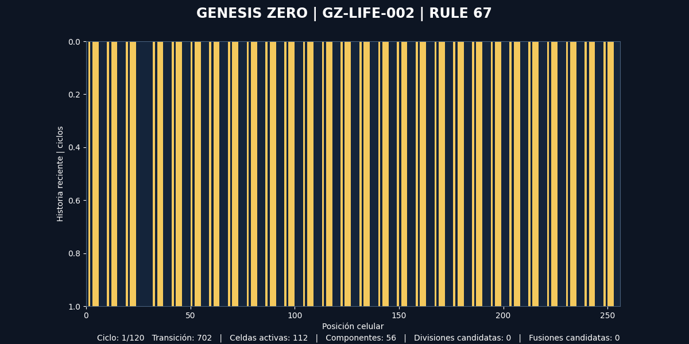
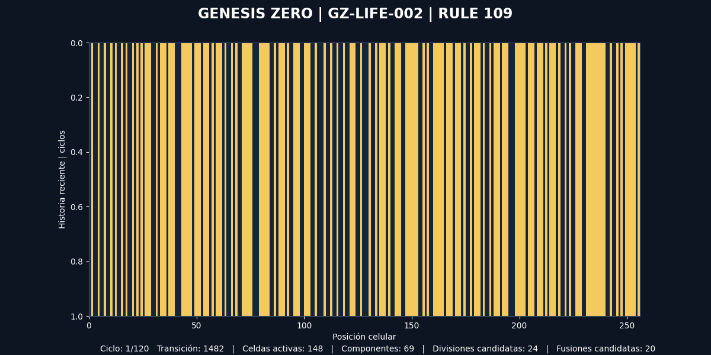
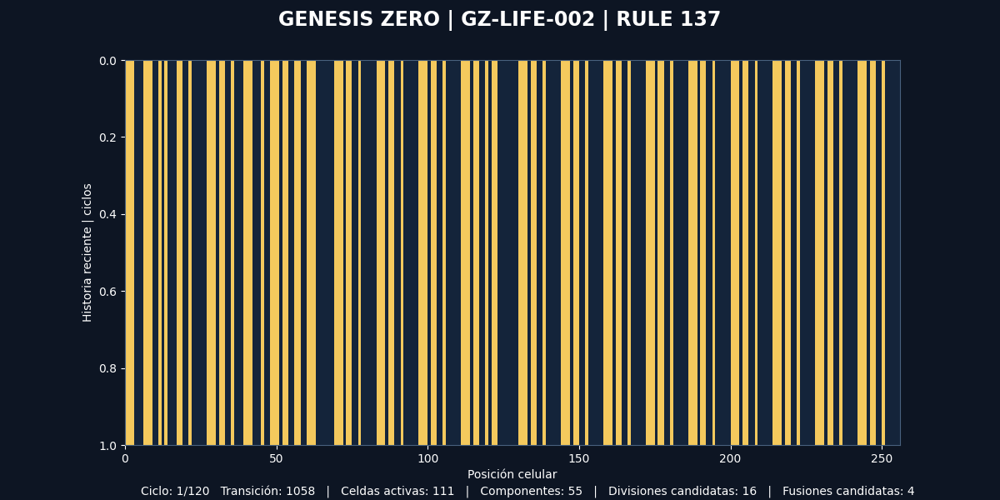
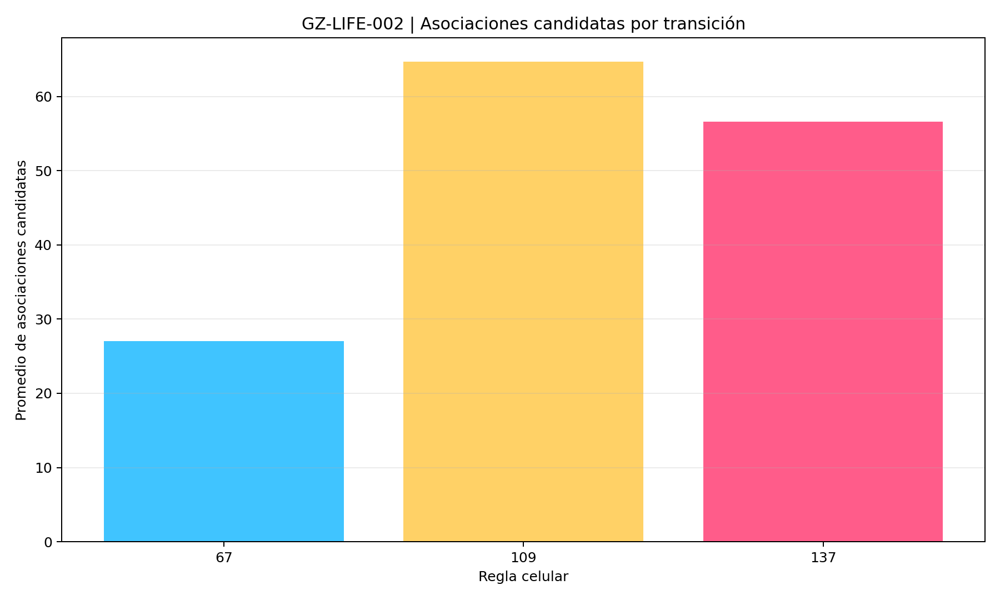
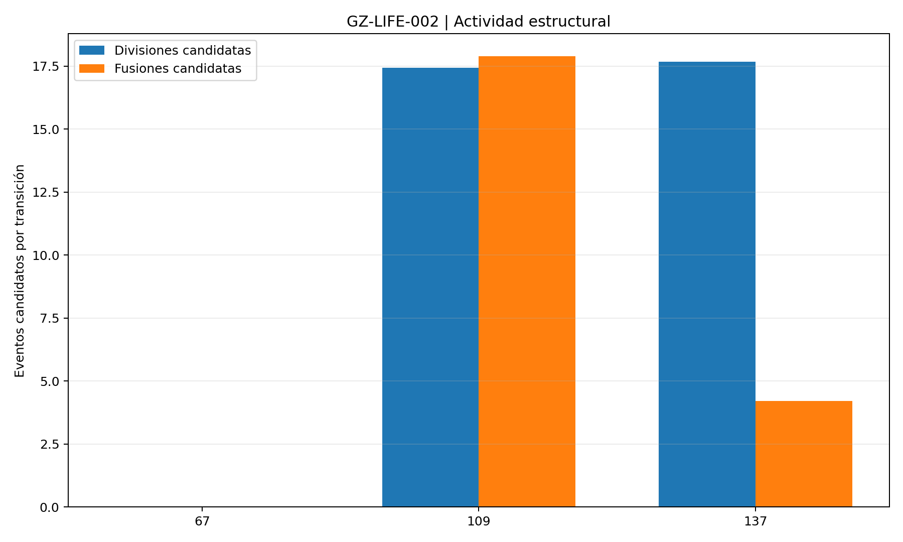
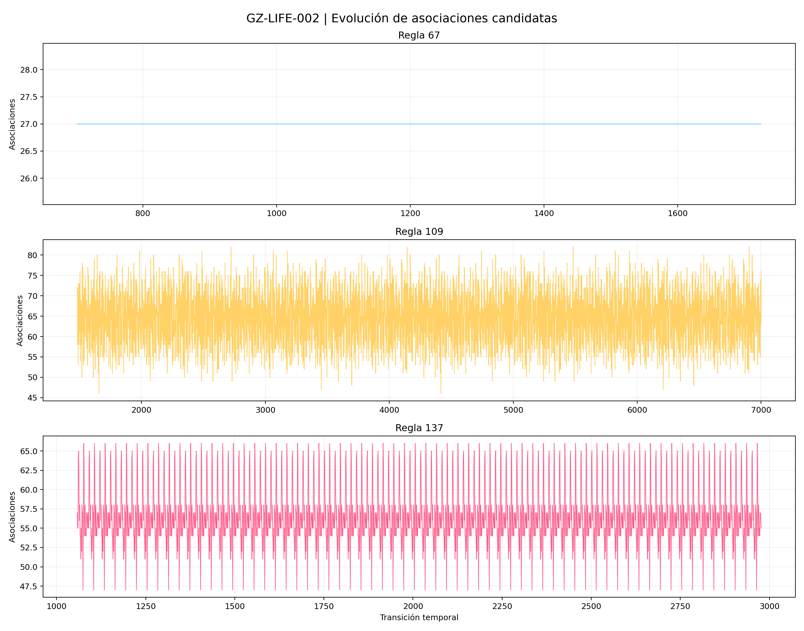
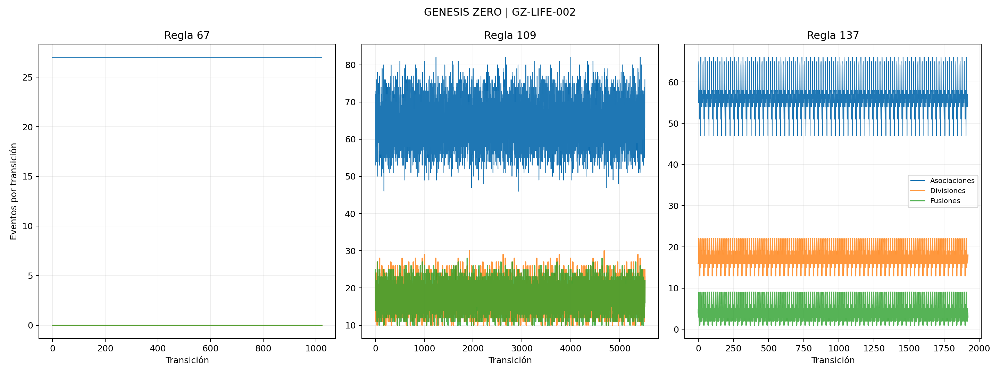

01 / LIVE STRUCTURAL VISUALIZATION
RULE 067

Periodic structural dynamics — 512-cycle period.
RULE 109

High candidate-association activity — 2,760-cycle period.
RULE 137

Distinct spatial organization — 960-cycle period.
02 / EXPERIMENTAL INDICATORS
03 / COMPARATIVE ANALYSIS
Candidate Associations

Splits & Merges

Temporal Evolution

Comparative Dashboard

04 / EXPERIMENTAL FRAMEWORK
Methodology
Three deterministic cellular automata rules were examined over two complete periodic cycles each.
Structural associations were identified using connected components, circular shifts up to three cells, and a Jaccard similarity threshold of 0.50.
Split and merge events represent geometric candidate associations. They do not establish biological reproduction, individual identity, or hereditary information transmission.
Original trajectories remain unchanged.